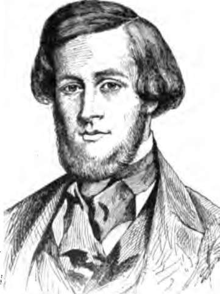

The Care Of The Nervous System And How Narcotics Affect It. Continued
Description
This section is from the book "The Human Body And Health", by Alvin Davison. Also available from Amazon: The Human Body and Health.
The Care Of The Nervous System And How Narcotics Affect It. Continued
How Alcohol Affects The Brain
Much of the alcoholic drink taken is absorbed by the blood vessels of the stomach, so that it reaches the nerve cells in a few minutes. A large amount of alcohol completely paralyzes them. A cupful of whisky will make a boy dead drunk and may kill him. This deathlike sleep will last for several hours, because the alcohol has numbed the cells of the brain so that it cannot act.
One or two tablespoonfuls of whisky, or a glass of wine, taken by a boy will make the hand unsteady and cause a tottering gait. This is because the alcohol partly stupefies the cells in the cerebellum, which in health make the muscles act in harmony. A drunken man reels and staggers when he has taken enough strong drink to prevent the cerebellum from doing its work.
Alcohol Makes The Nerves Unsteady
The trembling of the hands when attempting to hold them perfectly quiet, and a lack of power to stand erect without any swaying of the body, are sometimes seen even in moderate drinkers. The country of Sweden in 1905 experimented with her soldiers, to learn whether alcohol helped them to shoot better. On several different days each man was given four tablespoonfuls of brandy, and they were then ordered to shoot at a mark. The result was that they hit the mark only two thirds as many times in 30 shots as upon the days when no brandy was given them. The trials were made under varying conditions several times a day, and the result was always the same.
Evil Effects Of Alcohol As Shown By Experiments On Animals
The nervous system of a dog or cat is very similar to that of man, and is acted upon by drugs much in the same way as that of man. Alcohol given to dogs soon changes their character, even when the quantity fed them is small. They become timid, nervous, irritable and cross. They are so easily frightened that the sound of whistles and bells in the distance causes them to yelp and howl in an excited manner. Instead of responding to caresses they sometimes snap viciously at the hand put out to pet them.
Alcohol Makes The Nervous System Weak
The continued use of alcohol, even in such light drinks as that of beer, is known to have a weakening effect on the nervous system and to render it more liable to disease. The persons most generally attacked by sunstroke and heat stroke are the users of alcoholic drinks.
Of 70 persons killed by sunstroke in recent years, it is known that all but seven used intoxicating drinks. The soldiers in Austria are not allowed to carry any brandy during warm weather.
Alcohol And The Mind
Since the mind depends upon the brain and the health of its cells, it is reasonable to suppose that anything which has a bad effect upon the brain might also have a like effect on the mind. Experience shows that alcohol does harm the mind. Reports from many countries furnish the evidence that insanity, robbery and murder increase with the increased use of alcoholic drinks, and decrease wherever the law prevents the sale of liquor.
Alcohol Makes Persons Insane
An insane person is said to be crazy or out of his mind. He cannot think or reason rightly and often does not know his own brothers and sisters. He must be cared for by others, and sometimes must be shut up in a place called an asylum to prevent him from harming himself or others.
The reports of the asylums in England and Wales show that about three thousand five hundred persons are every year made insane by the use of alcoholic drink. In Water-ford County, Ireland, one in every 28 persons is a drunkard. As a consequence one in every 104 of the population is insane.
Alcohol Sends People To Prison
After the terrible earthquake at San Francisco, in 1906, all of the saloons were ordered closed for fear that the drunken persons would hurt the homeless women and children. As a result, the number of arrests by the police were only from two to six per day, for several months, until the saloons were opened again. Then the arrests were from fifty to over one hundred daily, and it was necessary to put extra policemen on duty. Inquiry has shown that of the 13,402 convicts in our prisons at one time, 4000 said that the first cause of their crime was alcohol.
Fig. 123. William Morton, who discovered the use of chloroform.
Chloroform, Ether And Cocaine
Chloroform and ether are great blessings to humanity, when rightly used, in preventing terrible suf-ering which would otherwise occur in performing operations on the human body. When the fumes of these drugs are breathed into the lungs they are carried by the blood to the nerve cells of the brain, and put them to sleep in a few minutes. This use of chloroform was discovered in 1846 by Doctor William Morton of Boston.
Cocaine deadens for a few minutes the feeling of the nerves wherever it is dropped on the skin or forced under the skin through a hollow needle. The dentists sometimes use it to prevent much pain in pulling a tooth. Chloroform, ether and cocaine are dangerous drugs, and should not be used by anyone except experienced persons. Because of the evil effects of the continual use of cocaine, a law was passed in 1908 forbidding the transmission by mail of any patent medicine containing cocaine.
Practical Questions
1. Give some facts about the weight of the brain. 2. Why should the brain have exercise? 3. How can you exercise your brain? 4. When does the brain grow most? 5. What is habit? 6. How is a habit formed? 7. Why is it wrong to harbor bad thoughts? 8. How much time should be given to sleep? 9. What may aid one" in going to sleep? 10. How does tobacco affect the nervous system? 11. Why is it wrong for boys to smoke cigarettes? 12. Describe the effect of alcohol on the brain. 13. How does alcohol affect the nerves? 14. Give facts showing that alcohol makes the nervous system weak. 15. What shows that alcohol hurts the mind? 16. Give facts showing that alcohol makes persons insane. 17. Show that alcohol sends people to prison. 18. What effect have chloroform and ether on the body? 19. Who discovered the use of chloroform? 20. How does cocaine affect the nerves?
Continue to:
- prev: Chapter XVII. The Care Of The Nervous System And How Narcotics Affect It
- Table of Contents
- next: Chapter XVIII. Organs For Receiving Knowledge